Introduction
This tutorial requires ipykernel and Jupyter Notebooks. It covers the basics of the PhoPro package for photometry data processing, handling, and analysis.
While using this package does not require much coding or technical knowledge, it is the good to get familiar with:
-
The numpy package and numpy arrays.
-
The pandas package and pandas DataFrames.
-
(Optional) the plotnine package as that is what this package uses as a plotting backend.
PhoPro is organized into 4 main modules:
-
PhotometryLoader - classes to load various photometry data formats.
-
PhotometryExperiment - a class for processing and windowing photometry experiments with many avaliable preprocessing methods.
-
PhotometryData - a class holding trial-wise signals and metadata with advanced filtering, averaging, windowing, and analysis functionality.
-
PhotometryPipeline - a class for easy, highly-customizable bulk processing of photometry data.
Setup
First we need to import the necessary packages. If you have trouble importing any of the PhoPro modules check to make sure your enviroment is active in the Jupyter Notebook and all dependencies are install properly (see the Installation guide on the docs).
import numpy as np
import pandas as pd
import matplotlib.pyplot as plt
from PhoPro import PhotometryExperiment, PhotometryData, PhotometryPipeline
1. Loading Data
We will begin by learning how to load data from a CSV file into the PhoPro package. The CSV file contains the columns: "time", containing timepoints; "raw_signal" and "raw_isosbestic", containing the signal from experimental and isosbestic wavelengths; and "trial_cue", "lever1", "lever2", and "shock", containing event timestamps.
# import the loader class for your specifc data format
from PhoPro import CSVLoader
# initialize the loader
loader = CSVLoader(
csv= 'data/experiments/example_experiment.csv',
time_col= 'time',
signal_col= 'raw_signal',
isosbestic_col= 'raw_isosbestic',
event_cols= ['trial_cue', 'lever1', 'lever2', 'shock']
)
# extract the data and load it into the PhotometryExperiment class
exp = loader.load()
# see if data was successfully loaded
exp
Dual channel photometry experiment with 100000 timepoints.
We can also load in important metadata from annotation files. Currently supported formats are JSON and YML. Built-in loaders also automatically pass down the source file to experimental metadata.
# initialize the loader
loader = CSVLoader(
csv= 'data/experiments/example_experiment.csv',
time_col= 'time',
signal_col= 'raw_signal',
isosbestic_col= 'raw_isosbestic',
event_cols= ['trial_cue', 'lever1', 'lever2', 'shock'],
annotation_file='data/experiments/example_annotation.json',
annotation_handler='json',
)
# extract the data and load it into the PhotometryExperiment class
exp = loader.load()
# see what matedata was picked up
exp.metadata
{'source': 'data/experiments/example_experiment.csv',
'subject': 'animal_1',
'sex': 'male',
'age': 'young'}
Other built in loaders, like the TDTLoader, behave very similarly to the CSVLoader.
2. Signal processing
Once you have your data loaded, the next step in most workflows is to preprocess the signals. The exact steps depend on whether or not the experiment conatins an isosbestic trace:
-
Dual-channel experiments have an isosbestic reference signal. They are generally more common and produce a cleaner signal by using the concentration agnostic isosbestic signal to correct signal artifacts and photobleaching.
-
Single-channel experiments do NOT have an isosbestic signal. They are usually less common and require extra steps to correct for photobleaching and artifacts.
2.1. Dual-channel processing
The general scheme for processing a dual-channel experiment is:
-
Apply a low-pass filter to both the experimental and isosbestic signals to filter out high frequency noise.
-
Fit the isosbestic to the experimental signal using a linear equation: \(\text{Exp} = \beta_1 \cdot \text{Iso} + \beta_0\).
-
Apply an isosbestic correction either
dF/FordF.dF/F\(= (\text{Exp.} - \text{Iso}_\text{ fitted}) / \text{Iso}_\text{ fitted}\)dF\(= (\text{Exp.} - \text{Iso}_\text{ fitted})\)
-
Optionally normalize the entire signal.
For most experiments the following parameters are recommended based on the findings in Keevers et al., 2025:
- A low-pass filter with a cutoff of 3 Hz and order of 4.
- Fitting the isosbestic curve with iteratively-reweighted least squares (IRLS).
- Using the
dF/Fcorrection. - No whole-trial normalization.
Let's begin by loading in our same example experiment from the previous section.
loader = CSVLoader(
csv= 'data/experiments/example_experiment.csv',
time_col= 'time',
signal_col= 'raw_signal',
isosbestic_col= 'raw_isosbestic',
event_cols= ['trial_cue', 'lever1', 'lever2', 'shock'],
annotation_file='data/experiments/example_annotation.json',
annotation_handler='json',
)
exp = loader.load()
# this time we will assign an ID to our experiment
exp.id = 'Dual-channel example'
Now we can examine the raw traces with .plot_dashboard().
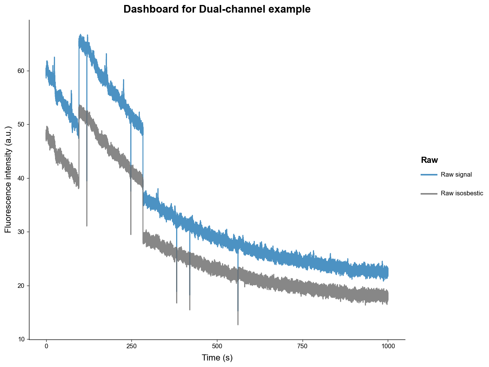
We can see that the raw experimental and isosbestic signals have significant photobleaching attenuation and movement artifacts. Notice, however, that the stark movement artifacts are shared between experimental and isosbestic signals. This is why using the isosbestic as a reference channel is an effective way to correct for artifacts.
Now is a good time to mention that all the ploting methods in this package return a ggplot object from the plotnine package, that can be directly modified to fit you publication or presentation needs. For example:
from plotnine import ggplot, theme, labs
p: ggplot = exp.plot_dashboard()
p = (
p
+ labs(title='New title')
+ theme(figure_size=(3.5, 3))
)
p.show()
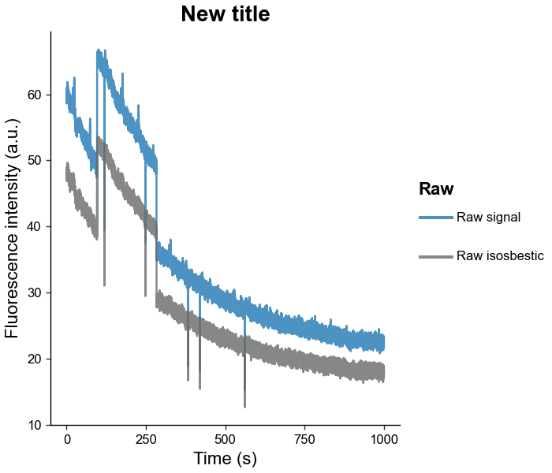
Now let's process the signal using the .preprocess_signal() methods. This method will:
-
Apply a low-pass butterworth filter with a specified cutoff frequency and order
-
Fit the isosbestic to the experimental signal using a customizable method
-
Apply the isosbestic correction
exp.preprocess_signal(
# lowpass butterworth params
cutoff_frequency=3,
order=4,
# correction method and isosbestic fit params
correction_method='dF/F',
fit_using='IRLS',
maxiter=2000,
c=2,
# artifact correction params (mostly useful for single channel experiments)
artifact_detector=None,
artifact_corrector=None,
channel_mode='auto'
)
# examine the fitted isosbestic and processed signal
exp.plot_dashboard(raw=False)
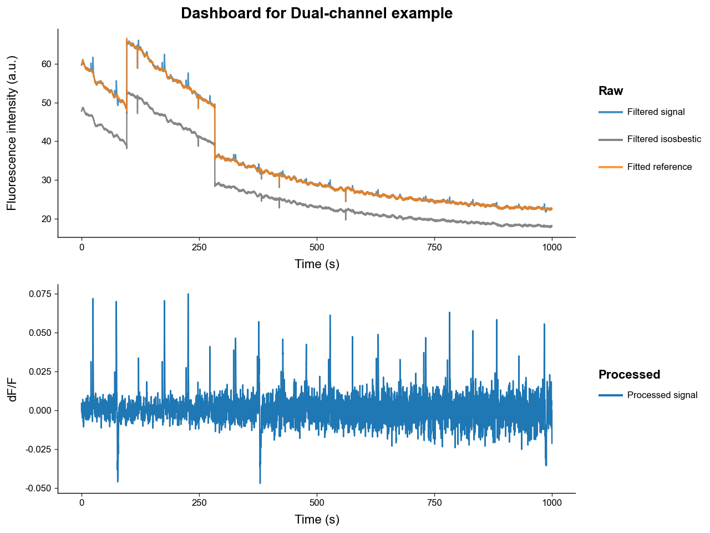
Notice how:
-
The filtered signals have much less high-frequency noise due to low-pass filtering.
-
The fitted isosbestic overlaps very nicely with the experimental signal except for some peak transients.
-
The processed signal is free of photobleaching attenuation and movement artifacts.
-
The transient spikes in the processed signal have a relatively stable amplitudes over time, while the magnitude of noise increases. This is because photobleaching attenuation decreases the signal-to-noise ratio.
Once .preprocess_signal() is run, the PhotometryExperiment object automatically populates its .metadata with reference fitting and correction type information.
{'source': 'data/experiments/example_experiment.csv',
'subject': 'animal_1',
'sex': 'male',
'age': 'young',
'reference_fit': {'type': 'isosbestic',
'r2_val': 0.9993991834603729,
'coeffs': array([0.02467583, 1.24905654])},
'correction_method': 'dF/F'}
Let's now compare the dF/F correction to the dF correction.
exp.preprocess_signal(
cutoff_frequency=3,
order=4,
# same parameters as before but with dF
correction_method='dF',
fit_using='IRLS',
maxiter=2000,
c=2,
artifact_detector=None,
artifact_corrector=None,
)
exp.plot_dashboard(raw=False)
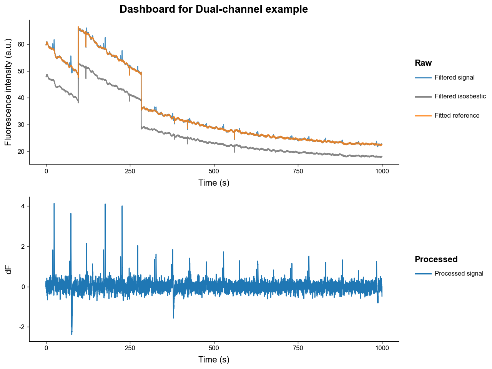
Now notice how:
-
The noise is constant while the transient peaks are decreasing in amplitude.
-
This is because the
dFcorrection does not correct for the photobleaching attenuation of the signal.
2.2. Single-channel processing
The general scheme for processing a single-channel experiment is:
-
Apply a low-pass filter to both the experimental signal to filter out high frequency noise.
-
Fit a photobleaching curve to the experimental signal.
- This package uses a negative biexponential equation to model photobleaching: \(\quad \alpha_1 \exp(-t / \tau_1) + \alpha_2 \exp(-t / \tau_2) + c\)
-
Apply an reference correction either
dB/BordB.dF/F\(= (\text{Exp.} - \text{B}_\text{ fitted}) / \text{B}_\text{ fitted}\)dF\(= (\text{Exp.} - \text{B}_\text{ fitted})\)
-
Detect and correct artifacts.
- Since a reference channel isosbestic curve that shares artifacts is not present manual artifact detection and correction is required.
We will begin by loading our example experiment like in 2.1, but we will not load the isosbestic trace. Notice how our dashboard plot only contains the raw experimental signal now.
# initialize the loader
loader = CSVLoader(
csv = 'data/experiments/example_experiment.csv',
time_col = 'time',
signal_col = 'raw_signal',
isosbestic_col = None,
event_cols = ['trial_cue', 'lever1', 'lever2', 'shock']
)
# extract the data and load it into the PhotometryExperiment class
exp = loader.load()
exp.id = 'Single-channel Example'
exp.plot_dashboard()
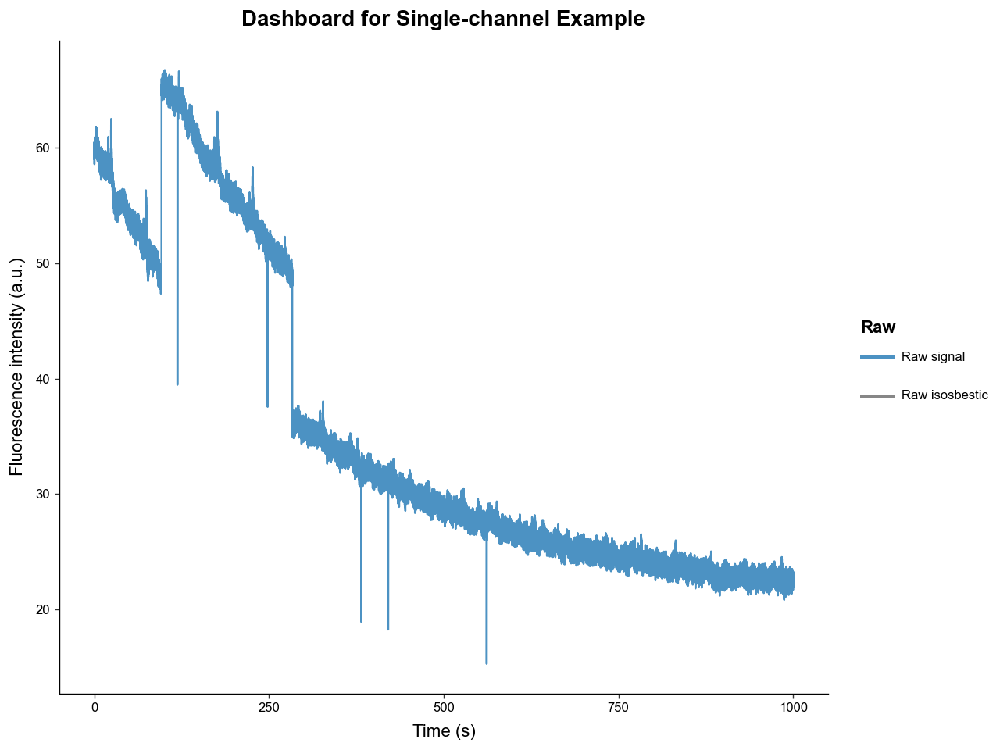
exp.preprocess_signal(
# lowpass butterworth params
cutoff_frequency=3,
order=4,
# correction method and isosbestic fit params
correction_method='dB/B',
fit_using='IRLS',
maxiter=1000,
c=2,
)
exp.plot_dashboard()
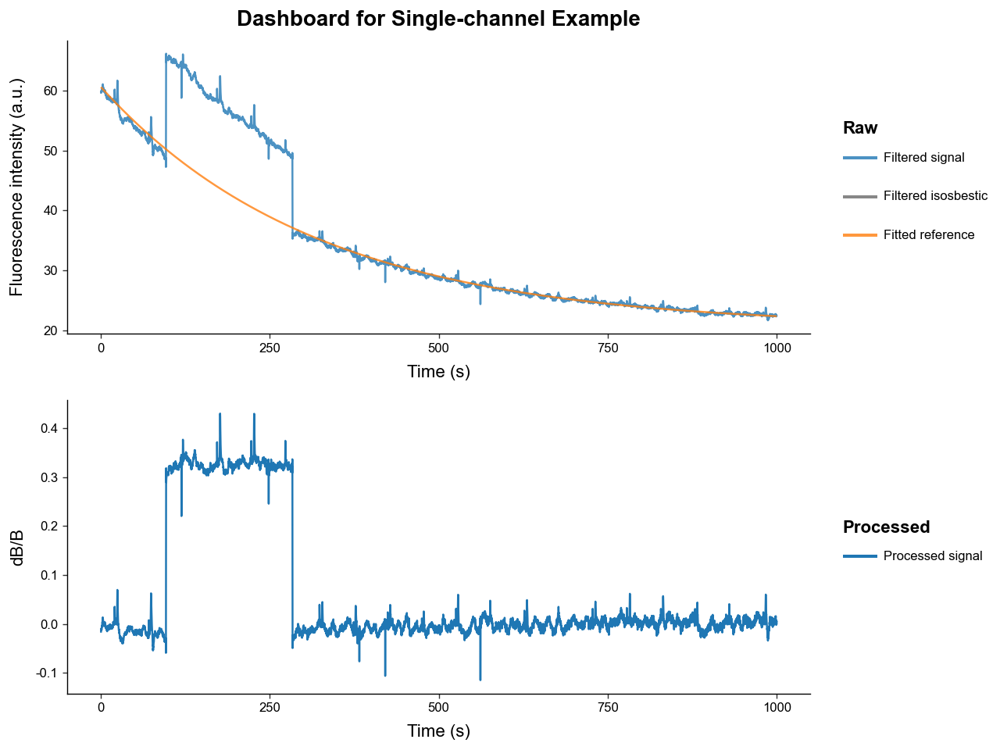
Our photobleaching curve fit very well. However, our processed signal still contains major artifacts - most prominently one large "jump" artifact.
To correct those artifacts, we need to setup our artifact handlers from the artifact module. The two most common types of artifacts are:
-
Spike artifacts: sharp pings that readily return to baseline
-
Jump artifacts: sharp changes that change the baseline value of signal for an extended period
Below we will use a detector the uses outlier derivative score-based detection and a corrector that fills artifacts with a spline interpolator.
# import artifact handlers
from PhoPro.analysis.artifact import ODS_Detector, Spline_Corrector
# instantiate artifact detector and corrector
detector = ODS_Detector(
score_threshold=5,
jump_score_threshold=5,
expand_sec=(0.5, 2),
buffer_sec=1.5,
n_chunks=20,
)
corrector = Spline_Corrector(
anchor_sec=(0.2, 0.2),
correct_spikes=True,
correct_jumps=True,
)
exp.preprocess_signal(
# lowpass butterworth params
cutoff_frequency=3,
order=4,
# correction method and isosbestic fit params
correction_method='dB/B',
fit_using='IRLS',
maxiter=1000,
c=2,
# pass in our artifact handlers
artifact_detector=detector,
artifact_corrector=corrector,
)
exp.plot_dashboard()
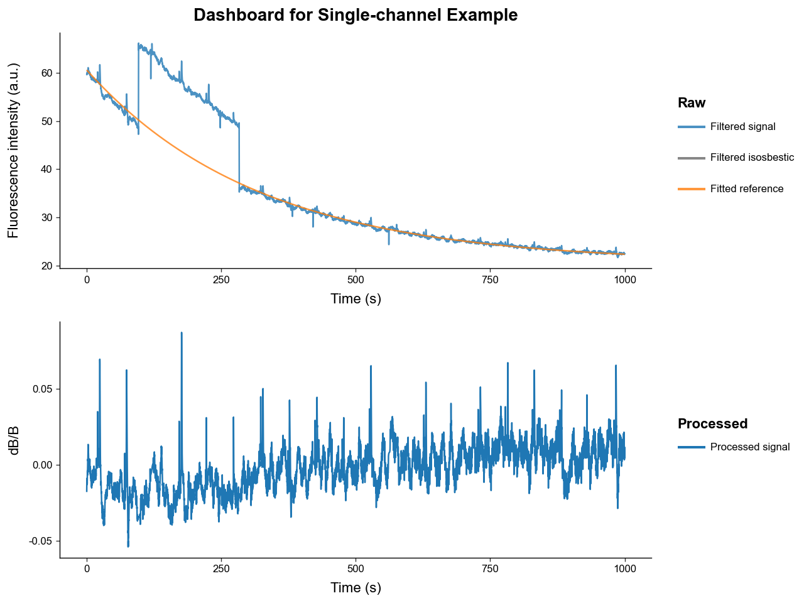
We can see the recovered signal with artifact correction has much less artifacting. Manual artifact correction is not perfect so using an isosbestic reference signal is preferred.
3. Trial Windowing
Once we have our processed, hopefully artifact-free, signal, we usually want to window the whole it into many smalled trials based on event or manual timestamps.
First, let's reload and process our example signal and inspect which events are present.
# load
loader = CSVLoader(
csv= 'data/experiments/example_experiment.csv',
time_col= 'time',
signal_col= 'raw_signal',
isosbestic_col= 'raw_isosbestic',
event_cols= ['trial_cue', 'lever1', 'lever2', 'shock'],
annotation_file='data/experiments/example_annotation.json',
annotation_handler='json',
)
exp = loader.load()
exp.id = 'Trial Extraction Example'
# process
exp.preprocess_signal(
correction_method='dF/F',
fit_using='IRLS',
)
# examine events present
exp.event_labels
['trial_cue', 'lever1', 'lever2', 'shock']
This simulated dataset models a risky-decision making behavioral experiment wherein: * A light turns on signifying the beginning of trial, represented by "trial_cue".
-
Then the rat has between 2 and 4 seconds after the "trial_cue" to choose 1 of 2 levers that when pressed register as "lever1" and "lever2".
-
"lever1" gives the rat a large food reward but there is a chance of the rat being shocked immediately after, represented by the "shock" event.
-
"lever2" gives the rat a small food reward.
To slice the processed signal in PhotometryExperiment into a many events we use the method .extract_trial_data(), which holds its result as a PhotometryData object in the .trial_data attribute.
exp.extract_trial_data(
# what event should we consider the "start" of a trial
align_to='trial_cue',
# what event(s) within a trial do we want to center on, i.e. be 0s
# they should be mutually exclusive and if none are present in a trial it is centered to "align_to"
center_on=['lever1', 'lever2'],
# how long in seconds should our trials be relative to "center_on"
trial_bounds=(-8, 8),
# expected range of our events relative to "align_to"
# if the value is None, the range defaults to "trial_bounds"
event_tolerences={
'lever1':(2, 4),
'lever2':(2, 4),
'shock':None,
},
# optional bounds for a "baseline" relative to the "align_to" event in seconds
baseline_bounds=None,
# which trial-wise normalization should be preformed
# most normalization require a baseline bound to be present
trial_normalization='none',
# if multiple of the same event are within specified tolerences which should be picked
event_conflict_logic='first',
# should an error be thrown if multiple "center_on" event are present in the same trial and within tolerence
check_overlap=True,
# toggle whether events that are not in "event_tolerences" are passed down
all_events=True,
# the method for how windows are constructed
window_alignment='interp'
)
trials = exp.trial_data
trials
Photometry dataset with 20 trials, 1600 timepoints, and 7 observations.
We can see from the displayed PhotometryData, that we extracted 20 trials, each with 999 timepoints.
4. Handling Trial-wise Data
This package stores trial-wise information in a PhotometryData object that uses anndata as the underlying data structure. This object can be written to and read from the .h5ad format and has many useful functions for data handling and analysis. It can also hold the trial-wise data from multiple experiments.
First let's save the data we extracted in 3. and load back in a clean file.
trials.write_h5ad('output/example_trials.h5ad')
trials = PhotometryData.read_h5ad('data/trials/example_trials.h5ad')
trials
Photometry dataset with 20 trials, 1598 timepoints, and 7 observations.
The main attributes of a PhotometryData object are:
-
.obsa pandas DataFrame holding trial-wise metadata (i.e. subject, event timestamps) -
.Xa 2D numpy array holding the processed signals of each trial (of shape n_trials, n_times) -
.tsa 1D numpy array of the time series
Let's examine these attributes below. Note that the event timestamp present in the experiment automatically populate .obs, with NaN values corresponding to the event being abscent in that trial.
Three other columns are also automatically populated by extract_trial_data():
-
trial_num: the order of trials found in the experiment. -
start_time: the time within the experiment that the trial starts. -
stop_time: the time within the experiment that the trial ends.
| trial_num | start_time | stop_time | trial_cue | lever1 | lever2 | shock | |
|---|---|---|---|---|---|---|---|
| 0 | 1 | 15.52 | 31.50581 | -3.52 | 0.0 | NaN | NaN |
| 1 | 2 | 65.23 | 81.21581 | -2.71 | 0.0 | NaN | 1.22 |
| 2 | 3 | 113.05 | 129.03581 | 0.00 | NaN | NaN | NaN |
| 3 | 4 | 167.51 | 183.49581 | -3.94 | 0.0 | NaN | NaN |
| 4 | 5 | 217.89 | 233.87581 | -3.79 | 0.0 | NaN | NaN |
display(
trials.ts[:10], # time series
trials.X[:2, :10], # trial signals
trials.X.shape, # of shape (n_trials, n_times)
)
array([-8. , -7.9899901, -7.9799802, -7.9699703, -7.9599604,
-7.9499505, -7.9399406, -7.9299307, -7.9199208, -7.9099109])
array([[0.00568005, 0.00563251, 0.00561191, 0.00562358, 0.00567088,
0.00575452, 0.00587314, 0.00602279, 0.00619719, 0.00638825],
[0.00108119, 0.00089587, 0.00072785, 0.00058132, 0.00045983,
0.0003662 , 0.00030247, 0.00026987, 0.00026861, 0.0002981 ]])
(20, 1598)
We will go ahead and drop the start and end time columns, as it is mainly diagnostic information and they won't be useful for us.
| trial_num | trial_cue | lever1 | lever2 | shock | |
|---|---|---|---|---|---|
| 0 | 1 | -3.52 | 0.0 | NaN | NaN |
| 1 | 2 | -2.71 | 0.0 | NaN | 1.22 |
| 2 | 3 | 0.00 | NaN | NaN | NaN |
| 3 | 4 | -3.94 | 0.0 | NaN | NaN |
| 4 | 5 | -3.79 | 0.0 | NaN | NaN |
Now let's see what we are working with by graphing the trials with .plot_trials().
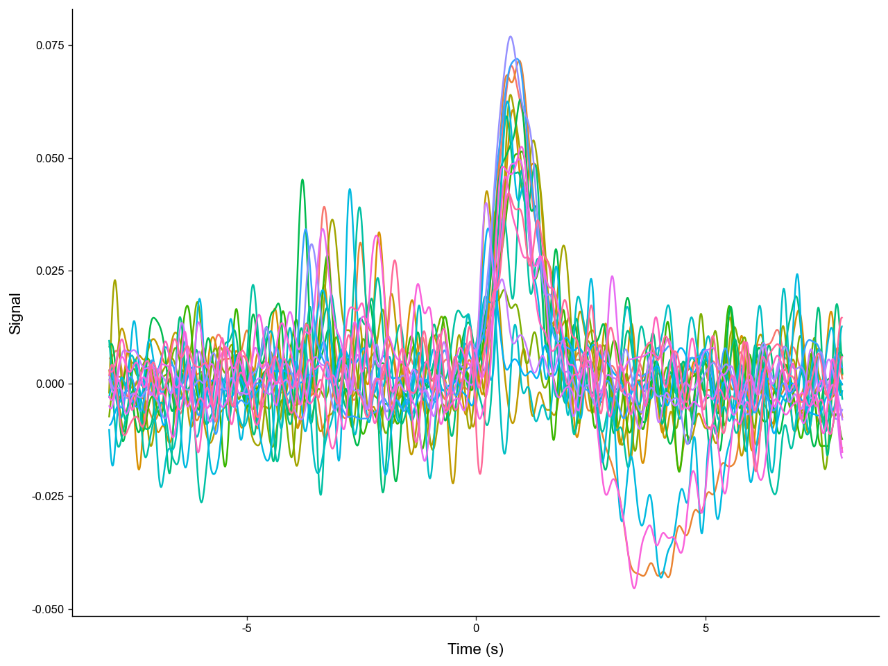
We can see that there are multiple distinct shapes of trials. Let's catagorize each trial by the events present. We can store this label in .obs. Manipulating and analyzing data often requires the manipulation of .obs.
-
NoResponsecorresponds to the subject failing to choose a lever. -
type1corresponds to the subject choosing the small reward lever ("lever2"). -
type2corresponds to the subject choosing the large reward lever ("lever1") but NOT recieving a shock. -
type3corresponds to the subject choosing the large reward lever ("lever1") AND recieving a shock.
# we can use a function to manipulate the .obs dataframe
def label_trials(df: pd.DataFrame) -> pd.DataFrame:
# label trial outcome by event present
# remeber a NaN value represents a missing event
has_lever1 = ~df['lever1'].isna()
has_lever2 = ~df['lever2'].isna()
has_shock = ~df['shock'].isna()
df['trial_label'] = pd.NA
df.loc[has_lever2, 'trial_label'] = 'type1'
df.loc[has_lever1 & ~has_shock, 'trial_label'] = 'type2'
df.loc[has_lever1 & has_shock, 'trial_label'] = 'type3'
df.loc[~has_lever1 & ~has_lever2, 'trial_label'] = 'NoResponse'
return df
# note the new "trial_label" column
trials.obs = label_trials(trials.obs)
trials.obs.head(5)
| trial_num | trial_cue | lever1 | lever2 | shock | trial_label | |
|---|---|---|---|---|---|---|
| 0 | 1 | -3.52 | 0.0 | NaN | NaN | type2 |
| 1 | 2 | -2.71 | 0.0 | NaN | 1.22 | type3 |
| 2 | 3 | 0.00 | NaN | NaN | NaN | NoResponse |
| 3 | 4 | -3.94 | 0.0 | NaN | NaN | type2 |
| 4 | 5 | -3.79 | 0.0 | NaN | NaN | type2 |
Now let's plot the trials again but group them by "trial_label".
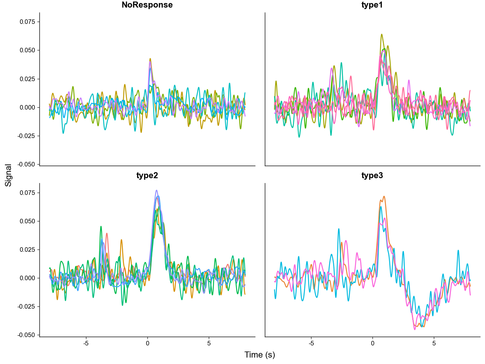
We can clearly see that the different trial outcomes have different signal architectures. Also note, how the peaks after "trial_cue" are aligned in the "NoResponse" trial type, but spread out in the other trial types, this is because the "NoResponse" trials are aligned to "trial_cue" but the others are aligned to lever presses - meaning there are variable latencies between "trial_cue" and lever presses.
We can quantitativly compare the signal architectures by calculating summary metrics like area under the curve (AUC).
# lets calculate the AUC between 0 and 4.9 seconds
# but first take the absolute value of the signal before calculation
# this is to capture the notable negative deviation in "type3" trails
trials.obs['AUC_abs'] = trials.area_under_curve(
centers=0.0,
bounds=(0, 4.9),
transformation=np.abs,
)
trials.obs.head(5)
| trial_num | trial_cue | lever1 | lever2 | shock | trial_label | AUC_abs | |
|---|---|---|---|---|---|---|---|
| 0 | 1 | -3.52 | 0.0 | NaN | NaN | type2 | 0.074713 |
| 1 | 2 | -2.71 | 0.0 | NaN | 1.22 | type3 | 0.150258 |
| 2 | 3 | 0.00 | NaN | NaN | NaN | NoResponse | 0.030606 |
| 3 | 4 | -3.94 | 0.0 | NaN | NaN | type2 | 0.083858 |
| 4 | 5 | -3.79 | 0.0 | NaN | NaN | type2 | 0.087954 |
# quick plot using pandas to compare differences in AUC_abs
trials.obs.plot(
x='trial_label',
y='AUC_abs',
kind='scatter',
)
plt.show()
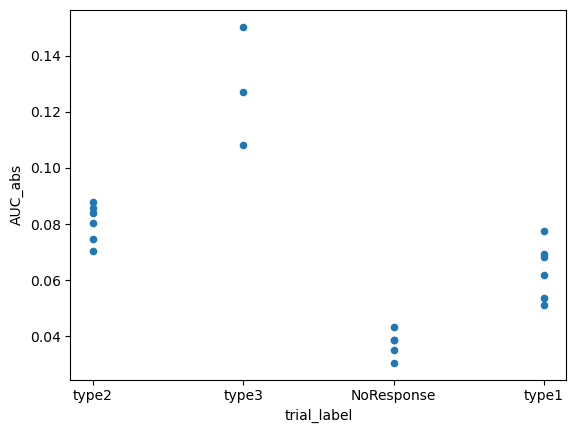
We can directly run an ANOVA with .ANOVA() to see if the differences are significant.
| Source | SS | DF | MS | F | p_unc | np2 | |
|---|---|---|---|---|---|---|---|
| 0 | trial_label | 0.016438 | 3 | 0.005479 | 51.521322 | 1.916450e-08 | 0.906194 |
| 1 | Within | 0.001702 | 16 | 0.000106 | NaN | NaN | NaN |
PhotometryData also provides methods to filter out specific trials and average across groups.
We can pass a boolean mask or a sequence of numeric indexes to .filter_rows() to select the desired trials.
Using .collapse we can average across groups in .obs resulting in a new PhotometryData object.
# filter out "NoResponse" trials
filt_trials = trials.filter_rows(
trials.obs['trial_label'] != 'NoResponse',
)
# average across trial types
avg = filt_trials.collapse(
# what .obs columns to group on
group_on=['trial_label'],
# what metrics other than mean to compute
metrics={'std' : np.std},
# what columns in .obs to also perform the aggregation on
data_cols=['trial_cue', 'AUC_abs'],
# what to call the count column
count_col='n_trials',
)
avg.obs
| trial_label | n_trials | trial_cue | AUC_abs | trial_cue_std | AUC_abs_std | |
|---|---|---|---|---|---|---|
| 0 | type2 | 6 | -3.358333 | 0.080484 | 0.644190 | 0.006149 |
| 1 | type3 | 3 | -2.680000 | 0.128538 | 0.225536 | 0.017163 |
| 2 | type1 | 6 | -3.030000 | 0.063665 | 0.514101 | 0.009130 |
Photometry dataset with 5 trials, 1598 timepoints, and 7 observations.
The averaged object now only has 3 trials since we filtered out "NoResponse" trials prior to averaging. .X is now the average signal and the other metrics that were calculated, like "std", are stored in the .layers attribute of the underlying adata structure. We can access them with .get_layer().
array([[0.00244562, 0.00257221, 0.00269665, ..., 0.00746858, 0.00713986,
0.00677318],
[0.00462332, 0.00531349, 0.00596617, ..., 0.0047484 , 0.00522709,
0.00571096],
[0.00528095, 0.00476425, 0.00446005, ..., 0.01031396, 0.01048537,
0.01053889]], shape=(3, 1598))
Now we can plot the average signal for each trial type, with labels and error bars.
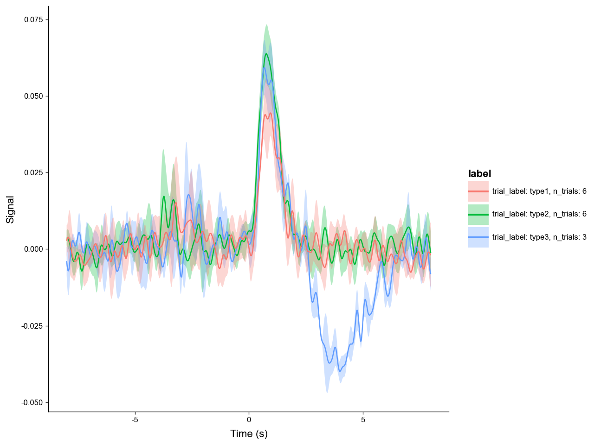
What if we want to refocus on the subject's response to "trial_cue"? We can do this with the .window() method.
recentered = trials.window(
# you can pass in a scalar or a sequence of timestamps as centers
# in this case we are using an event timestamp column in ".obs"
centers = trials.obs['trial_cue'],
bounds = (-3, 3),
# which columns in .obs to also recenter
event_cols=['trial_cue', 'lever1', 'lever2', 'shock']
)
recentered_avg = recentered.collapse(
# passing None means all the trials will be averaged
group_on=None
)
recentered_avg.plot_trials(err_layer='std')
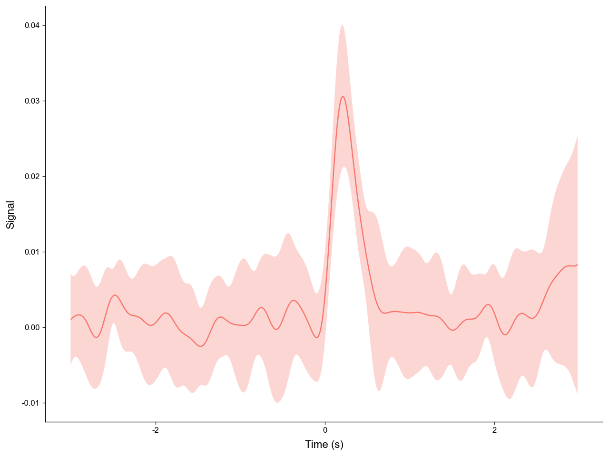
With windowing we can easily get a clean, aligned view of the "trial_cue" peak across trials.
5. Bulk Processing
Processing experiments one at a time is all well and good, but often times we need to process dozens to hundreds of experiments. The PhotometryPipeline class makes batch processing easy.
Take a look in the "data/pipeline/" directory. There you can see two cases of file layouts:
-
Case 1: has data (CSV) and annotation (JSON) files seperated in different folders.
-
Case 2: has all data (CSV) and annotation (JSON) files in the same directory.
First we will tackle case 1. To use PhotometryPipeline first you have to initialize the object then run it with specific processing parameters.
from PhoPro import PhotometryPipeline, CSVLoader
# initialize a pipeline object
pipeline1 = PhotometryPipeline(
# point it to files within the data directory
data_directory='data/pipeline/case1',
target_type='file',
# need to specify which loader to use
loader_cls=CSVLoader,
# needs to be recursive to search within subdirectory
recursive=True,
pattern='experiment_*.csv'
)
# see what inputs are discovered
pipeline1.discover_inputs()
[PosixPath('data/pipeline/case1/experiment_1/experiment_1.csv'),
PosixPath('data/pipeline/case1/experiment_3/experiment_3.csv'),
PosixPath('data/pipeline/case1/experiment_2/experiment_2.csv')]
Now that we have confirmed the inputs are correct, we can run the pipeline by passing in keyword arguments for our selected PhotometryLoader, PhotometryExperiment.preprocess_signal(), and PhotometryExperiment.extract_trial_data().
from pathlib import Path
# .preprocess_signal() arguments
preprocess_kwargs = dict(
correction_method = 'dF/F',
fit_using = 'OLS',
)
# .extract_trial_data() arguments
trial_extraction_kwargs = dict(
align_to='trial_cue',
center_on=['lever1', 'lever2'],
trial_bounds=(-8, 8),
trial_normalization='none',
check_overlap=True,
all_events=True,
)
# loader arguments
# we can pass in loader kwargs as a function that takes in the csv file path
# so the pipeline can find the annotation files based on the csv path
def case1_loader_kwargs(csv: Path):
annotation_file = csv.parent / 'annotation.json'
return dict(
time_col = 'time',
signal_col = 'raw_signal',
isosbestic_col = 'raw_isosbestic',
event_cols = ['trial_cue', 'lever1', 'lever2', 'shock'],
annotation_file = annotation_file,
annotation_handler = 'json',
)
# run our pipeline
trials: PhotometryData = pipeline1.run(
# pass in keyword arguments
loader_kwargs = case1_loader_kwargs,
preprocess_kwargs = preprocess_kwargs,
trial_extraction_kwargs = trial_extraction_kwargs,
# do not automatically save
output_dir = None,
# log to a file
log_file = 'output/example_pipeline_case1.log',
# passdown metadata loaded from the annotations to .obs
passdown_metadata = ['source', 'subject', 'sex', 'age']
)
# view output
print(trials)
trials.obs.head(5)
Photometry dataset with 60 trials, 320 timepoints, and 11 observations.
| trial_num | start_time | stop_time | trial_cue | lever1 | lever2 | shock | source | subject | sex | age | |
|---|---|---|---|---|---|---|---|---|---|---|---|
| 0 | 1 | 15.50 | 31.45 | -3.50 | 0.0 | NaN | NaN | data/pipeline/case1/experiment_1/experiment_1.csv | animal_1 | male | young |
| 1 | 2 | 65.20 | 81.15 | -2.70 | 0.0 | NaN | 1.25 | data/pipeline/case1/experiment_1/experiment_1.csv | animal_1 | male | young |
| 2 | 3 | 113.00 | 128.95 | 0.00 | NaN | NaN | NaN | data/pipeline/case1/experiment_1/experiment_1.csv | animal_1 | male | young |
| 3 | 4 | 167.50 | 183.45 | -3.95 | 0.0 | NaN | NaN | data/pipeline/case1/experiment_1/experiment_1.csv | animal_1 | male | young |
| 4 | 5 | 217.85 | 233.80 | -3.80 | 0.0 | NaN | NaN | data/pipeline/case1/experiment_1/experiment_1.csv | animal_1 | male | young |
Dealing with case 2 is very similar; however, we do not need to make it recursive and we need to change the loader keyword arguments.
# initialize a pipeline object
pipeline2 = PhotometryPipeline(
data_directory='data/pipeline/case2',
target_type='file',
loader_cls=CSVLoader,
# does not need to be recursive
recursive=False,
pattern='experiment_*.csv'
)
# .preprocess_signal() arguments
preprocess_kwargs = dict(
correction_method = 'dF/F',
fit_using = 'OLS',
)
# .extract_trial_data() arguments
trial_extraction_kwargs = dict(
align_to='trial_cue',
center_on=['lever1', 'lever2'],
trial_bounds=(-8, 8),
trial_normalization='none',
check_overlap=True,
all_events=True,
)
# loader arguments
# we can shorten the loader_kwargs function with lambda notation
case2_loader_kwargs = lambda csv: dict(
time_col = 'time',
signal_col = 'raw_signal',
isosbestic_col = 'raw_isosbestic',
event_cols = ['trial_cue', 'lever1', 'lever2', 'shock'],
annotation_file = csv.with_suffix('.json'),
annotation_handler = 'json',
)
# run our pipeline
trials: PhotometryData = pipeline2.run(
loader_kwargs = case2_loader_kwargs,
preprocess_kwargs = preprocess_kwargs,
trial_extraction_kwargs = trial_extraction_kwargs,
output_dir = None,
log_file = 'output/example_pipeline_case2.log',
passdown_metadata = ['source', 'subject', 'sex', 'age']
)
# view output
print(trials)
trials.obs.head(5)
Photometry dataset with 60 trials, 320 timepoints, and 11 observations.
| trial_num | start_time | stop_time | trial_cue | lever1 | lever2 | shock | source | subject | sex | age | |
|---|---|---|---|---|---|---|---|---|---|---|---|
| 0 | 1 | 15.50 | 31.45 | -3.50 | 0.0 | NaN | NaN | data/pipeline/case2/experiment_1.csv | animal_1 | male | young |
| 1 | 2 | 65.20 | 81.15 | -2.70 | 0.0 | NaN | 1.25 | data/pipeline/case2/experiment_1.csv | animal_1 | male | young |
| 2 | 3 | 113.00 | 128.95 | 0.00 | NaN | NaN | NaN | data/pipeline/case2/experiment_1.csv | animal_1 | male | young |
| 3 | 4 | 167.50 | 183.45 | -3.95 | 0.0 | NaN | NaN | data/pipeline/case2/experiment_1.csv | animal_1 | male | young |
| 4 | 5 | 217.85 | 233.80 | -3.80 | 0.0 | NaN | NaN | data/pipeline/case2/experiment_1.csv | animal_1 | male | young |
We can also put in custom operations and an unique identifier builder function into the pipeline.
# set up identifier builder
# it needs to be a function that takes in a PhotometryExperiment and returns a string
def build_id(exp: PhotometryExperiment) -> str:
experiment_num = exp.metadata['source'].split('_')[-1].split('.')[0]
id = (
f"exp{experiment_num}_{exp.metadata['subject']}"
)
return id
# a pre-signal processing operation
# that will trim the first ten time points
def post_load_func(exp: PhotometryExperiment) -> None:
exp.trim_times_by_index(start_idx=10, stop_idx=None)
# a post trial extraction operation
# that will assign trial labels
def post_extraction_func(exp: PhotometryExperiment) -> None:
df = exp.trial_data.obs
has_lever1 = ~df['lever1'].isna()
has_lever2 = ~df['lever2'].isna()
has_shock = ~df['shock'].isna()
df['trial_label'] = pd.NA
df.loc[has_lever2, 'trial_label'] = 'type1'
df.loc[has_lever1 & ~has_shock, 'trial_label'] = 'type2'
df.loc[has_lever1 & has_shock, 'trial_label'] = 'type3'
df.loc[~has_lever1 & ~has_lever2, 'trial_label'] = 'NoResponse'
exp.trial_data.obs = df
# run our pipeline
trials: PhotometryData = pipeline1.run(
loader_kwargs = case1_loader_kwargs,
preprocess_kwargs = preprocess_kwargs,
trial_extraction_kwargs = trial_extraction_kwargs,
output_dir = None,
log_file = 'output/example_pipeline_case3.log',
passdown_metadata = ['source', 'subject', 'sex', 'age'],
# pass in functions
id_builder=build_id,
post_load_operation=post_load_func,
post_trial_extraction_operation=post_extraction_func,
)
# view output
print(trials)
trials.obs.head(5)
Photometry dataset with 60 trials, 320 timepoints, and 13 observations.
| trial_num | start_time | stop_time | trial_cue | lever1 | lever2 | shock | trial_label | experiment_id | source | subject | sex | age | |
|---|---|---|---|---|---|---|---|---|---|---|---|---|---|
| 0 | 1 | 15.50 | 31.45 | -3.50 | 0.0 | NaN | NaN | type2 | exp1_animal_1 | data/pipeline/case1/experiment_1/experiment_1.csv | animal_1 | male | young |
| 1 | 2 | 65.20 | 81.15 | -2.70 | 0.0 | NaN | 1.25 | type3 | exp1_animal_1 | data/pipeline/case1/experiment_1/experiment_1.csv | animal_1 | male | young |
| 2 | 3 | 113.00 | 128.95 | 0.00 | NaN | NaN | NaN | NoResponse | exp1_animal_1 | data/pipeline/case1/experiment_1/experiment_1.csv | animal_1 | male | young |
| 3 | 4 | 167.50 | 183.45 | -3.95 | 0.0 | NaN | NaN | type2 | exp1_animal_1 | data/pipeline/case1/experiment_1/experiment_1.csv | animal_1 | male | young |
| 4 | 5 | 217.85 | 233.80 | -3.80 | 0.0 | NaN | NaN | type2 | exp1_animal_1 | data/pipeline/case1/experiment_1/experiment_1.csv | animal_1 | male | young |
Note the new column "experiment_id" and "trial_label", and the "Running custom operations..." lines in the pipeline log.
Summary
PhoPro provides a comprehensive toolkit for processing, handling, and analyzing fiber photometry data. More in depth tutorials are avaliable on loading data, processing experiments, handling trial-wise data, and simulating photometry data.